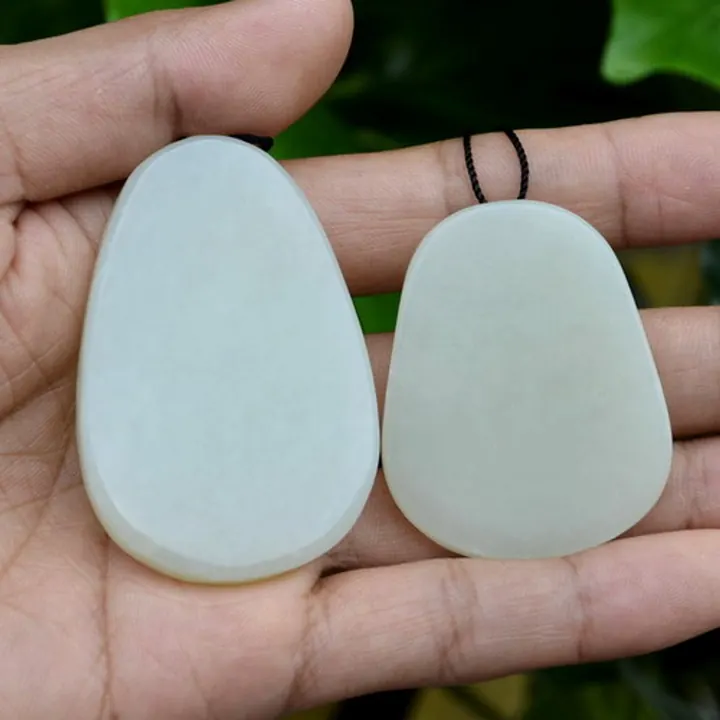

青海料、俄料、韓料：和田玉的產地拼圖
「和田玉」聽起來像一個地名，其實是一張拼圖——青海、俄羅斯、韓國都出產軟玉，而它們長得一點都不像。

核心定義
廣義的「和田玉」指以透閃石為主的軟玉——按中華人民共和國國家標準，只要礦物成分合格，青海、俄羅斯、韓國產的軟玉都可以冠名「和田玉」。但行家心裡清楚：不同產地，質地與價格天差地別。
三大主力產地：新疆（和田、且末、若羌）、青海（崑崙山東段）、俄羅斯（貝加爾湖地區）；韓國春川是近年興起的第四勢力。市場上流通的「和田玉」，實際上超過一半來自青海與俄羅斯。
特徵與分類
| 產地 | 代表特徵 | 透明度 | 油性 | 市場定位 |
|---|---|---|---|---|
| 新疆籽料 | 皮色、油潤、質細 | 微透 | 極佳 | 收藏主力 |
| 青海料 | 水透、常見水線 | 較透 | 中等 | 大眾飾品 |
| 俄料 | 白而乾、常帶糖色 | 微透至不透明 | 較差 | 擺件、中檔 |
| 韓料 | 黃綠色調、質粗 | 不透明 | 差 | 低價飾品 |
一句話記住：新疆料油、青海料透、俄料白、韓料綠黃——產地就像身分證，特徵藏都藏不住。
科學原理
軟玉由富鎂的碳酸鹽岩與中酸性岩漿熱液接觸交代而成（接觸變質作用）——透閃石在 400–600°C 的熱液環境中結晶，形成氈狀結構。不同產地的圍岩條件不同：新疆的礫石環境（籽料）經長途搬運磨圓，青海的脈料直接採自山體，俄料的產狀則更接近新疆山料。
青海料常見的「水線」（transparent vein）是後期透閃石細脈充填的產物——它像一條半透明的筋，是青海料的標誌性特徵；俄料常見「糖色」是鐵離子滲入的氧化帶；韓料則因陽起石含量偏高而帶黃綠調。這些都是地質條件的指紋。
鑑定與鑑別方法
- 看水線：青海料典型半透明細脈
- 看糖色：俄料常帶紅褐色糖帶
- 看色調：韓料黃綠、青海偏水、俄料死白
- 打燈：青海料透光性明顯高於新疆料
- 記住：產地鑑別靠「綜合特徵」，單一特徵不足為憑
市場行情與保養建議
市場行情：同等大小下，新疆籽料可能比青海料貴 5–20 倍，俄料居中。2026 年的參考：青海白玉手鐲新台幣數千至數萬元，俄料白玉手鐲約 1–5 萬元，新疆籽料手鐲則從數萬到數十萬元起跳——產地一變，價格跳一個數量級。
風險提示：部分商家用青海料冒充新疆料、用韓料冒充俄料——認證書、看特徵、比油性，缺一不可。價格僅供參考，非投資建議。
常見誤區
按現行國標，軟玉成分合格即可稱「和田玉」——青海、俄羅斯、韓國產皆可。但市場話術與科學定義是兩回事。
俄料也有頂級碧玉與細白料，青海料也有「翠青玉」等特色品種——產地只決定「平均水準」，不決定「單件好壞」。
冷知識
奧運金牌內嵌的玉環，選用的是青海崑崙玉——讓青海料一夜之間知名度暴漲，也開啟了青海料的市場時代。
韓料質地偏粗、色帶黃綠，早期曾被當作低價飾品大量出口——直到消費者學會看「黃綠調」，它才退居低端市場。
反直覺觀點
實驗室的科學鑑定只驗「是不是軟玉」，產地是「推斷」而非「結論」——因為透閃石成分與結構在地球上並無唯一產地指紋。你買到的「新疆籽料」，靠的是商家的良心。
頂級俄碧玉、青海翠青玉的市場價，可以超過普通新疆白玉——產地是參考，品質才是王道。迷信產地，往往是交學費的開始。